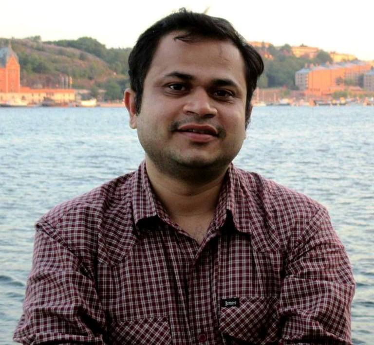

Md Sahidullah
Independent Researcher & Consultant
Phone: +91-9433289799
Email: sahidullahmd@gmail.com
[ Research |
Education |
Publications|
Professional Activities|
Google Scholar Profile|
ResearchGate Profile]
About me
I am a speech researcher with more than seven years of post-phd experience. I have a general interest in speech science and technology. My current activities include writing monograph, mentoring doctoral students, and reviewing research articles.
Specific areas of interest
- Speaker recognition and spoofing countermeasures
- Speech representation learning for characterizing speech signals
- Audio dataset collection, analysis and design of experiments
Professional experiences
- Researcher, Inria, France (September 2018 -- August 2021)
- Post-doctoral Researcher, Inria, France (January 2018 -- August 2018)
- Visiting Scientist, Inria, France (August 2017 -- November 2017)
- Post-doctoroal Researcher, University of Eastern Finland, Finland (April 2014 -- April 2017)
- Programmer Analyst Trainee, Cognizant Technology Solutions Corporation, India (May 2006 -- January 2008)
Education
Publications
Refereed Journal Papers
- Z. Wu, J. Yamagishi, T. Kinnunen, C. Hanilci, , M. Sahidullah, A. Sizov, N. Evans, M. Todisco, H. Delgado; "ASVspoof: the Automatic Speaker Verification Spoofing and Countermeasures Challenge"; IEEE Journal on Selected Topics in Signal Processing, (Article in Press). (PDF)
- C. Hanilci, T. Kinnunen, M. Sahidullah, and A. Sizov; "Spoofing Detection Goes Noisy: An Analysis of Synthetic Speech Detection in the Presence of Additive Noise"; Speech Communication, Vol 85, December 2016, Page 83-97. (PDF)
- N. Sengupta, M. Sahidullah and G. Saha; "Lung sound classification using cepstral-based statistical features"; Computers in Biology and Medicine, Vol 75, No 1, Page 118-129, 2016. (PDF)
- M. Sahidullah and T. Kinnunen; "Local Spectral Variability Features for Speaker Verification"; Digital Signal Processing, Vol 50, Page 1-11, March 2016. (MATLAB Codes) (PDF)
- M. Sahidullah and G. Saha; "A Novel Windowing Technique for Efficient Computation of MFCC for Speaker Recognition"; IEEE Signal Processing Letters,
Vol 20, No 2, Page 149-152, 2013. (PDF)
- M. Sahidullah and G. Saha; "Design, Analysis and Experimental Evaluation of Block Based Transformation in MFCC Computation for Speaker
Recognition"; Speech Communication, Vol 54, No 4, Page 543-565, 2012. (PDF)
- M. Sahidullah, S. Chakroborty and G. Saha; "On the Use of Perceptual Line Spectral Pairs Frequencies and Higher-Order Residual Moments for Speaker
Identification"; International Journal of Biometrics, Vol 2, No 4, Page 358-378, 2010. (PDF)
Refereed Conference Papers
- D. Paul, M. Sahidullah, G. Saha; "Generalization of Spoofing Countermeasures: A Case Study with ASVspoof 2015 and BTAS 2016 Corpora"; Proc. IEEE ICASSP 2017, pp. 2047-2051, New Orleans, USA, March 2017. (PDF)
- T. Kinnunen, M. Sahidullah, M. Falcone, L. Costantini, R.G. Hautamäki, D. Thomsen, A. Sarkar, Z.-H. Tan, H. Delgado, M. Todisco, N. Evans, V. Hautamäki and K.A. Lee; "RedDots Replayed: A New Replay Spoofing Attack Corpus for Text-dependent Speaker Verification Research"; Proc. IEEE ICASSP 2017, pp. 5395-5399, New Orleans, USA, March 2017. (PDF)
- A. Kanervisto, V. Vestman, M. Sahidullah, V. Hautamäkii, T. Kinnunen; "Effects of Gender Information in Text-independent and Text-dependent Speaker Verification"; Proc. IEEE ICASSP 2017, pp. 5360-5364, New Orleans, USA, March 2017. (PDF)
- H. Delgado, M. Todisco, M. Sahidullah, A. Sarkar, N. Evans, T. Kinnunen, and Z.-H. Tan; "Further optimisations of constant Q cepstral processing for integrated utterance verification and text-dependent speaker verification"; Proc. IEEE workshop on Spoken Language Technology 2016 (SLT2016) pp. 179-185, San Diego, USA, December 2016. (PDF)
- M. Sahidullah, H. Delgado, M. Todisco, H. Yu, T. Kinnunen, N. Evans and Z.-H. Tan; "Integrated Spoofing Countermeasures and Automatic Speaker Verification: an Evaluation on ASVspoof 2015"; Interspeech 2016, San Francisco, USA. (PDF)
- M. Sahidullah, R.G. Hautamäki, D.A.L. Thomsen, T. Kinnunen, Z.-H. Tan, V. Hautamäki, R. Parts and M. Pitkanen; "Robust Speaker Recognition with Combined Use of Acoustic and Throat Microphone Speech"; Interspeech 2016, San Francisco, USA. (PDF)
- T. Kinnunen, M. Sahidullah, I. Kukanov, H. Delgado, M. Todisco, A. Sarkar, N. Thomsen, V. Hautamaki, N. Evans and Z.-H. Tan; "Utterance Verification for Text-Dependent Speaker Recognition: a Comparative Assessment Using the RedDots Corpus"; Interspeech 2016, San Francisco, USA. (File Lists) (PDF)
- T. Kinnunen, A. Sholokhov, E. Khoury, D.A.L. Thomsen, M. Sahidullah and Z.-H. Tan; "HAPPY Team Entry to NIST OpenSAD Challenge: A Fusion of Short-Term Unsupervised and Segment i-Vector Based Speech Activity Detectors"; Interspeech 2016, San Francisco, USA. (PDF).
- P. Korshunov, S. Marcel, H. Muckenhirnand, A.R. Gonçalves, A.G. Souza Mello, R.P. Velloso Violato, F.O. Simões, M.U. Neto, M. de Assis Angeloni, J.A. Stuchi, H. Dinkel, N. Chen, Y. Qian, D. Paul, G. Saha and M. Sahidullah; "Overview of BTAS 2016 Speaker Anti-spoofing Competition"; 2016 IEEE 8th International Conference on Biometrics Theory, Applications and Systems (BTAS), Niagara Falls, Buffalo, New York (USA). (PDF)
- R.G. Hautamäki, M. Sahidullah, T. Kinnunen and V. Hautamäki; "Age-Related Voice Disguise and its Impact on Speaker Verification Accuracy"; Speaker Odyssey, Bilbao, Spain, 2016. (PDF).
- A. Poddar, M. Sahidullah and G. Saha; "Performance Comparison of Speaker Recognition Systems in Presence of Duration Variability"; Proc. 2015 Annual IEEE India Conference (INDICON),
New Delhi, India, December 2015. (PDF)
- N. Sengupta, M. Sahidullah and G. Saha; "Optimization of Cepstral Features for Robust Lung Sound Classification"; Proc. 2015 Annual IEEE India Conference (INDICON),
New Delhi, India, December 2015.
- M. Sahidullah, T. Kinnunen and C. Hanilci; "A comparison of features for synthetic speech detection"; Proc. Interspeech 2015, pp. 2087-2091,
Dresden, Germany, September 2015. (MATLAB Codes) (PDF)
- C. Hanilci, T. Kinnunen, M. Sahidullah, and A. Sizov; "Classifiers for synthetic speech detection: a comparison"; Proc. Interspeech 2015, pp. 2057-2061,
Dresden, Germany, September 2015. (PDF)
- Z. Wu, T. Kinnunen, N. Evans, J. Yamagishi, C. Hanilci, M. Sahidullah, A. Sizov; "ASVspoof 2015: the first automatic speaker verification spoofing and countermeasures challenge"; Proc. Interspeech 2015, pp. 2037-2041,
Dresden, Germany, September 2015. (PDF)
- M. Sahidullah, G. Saha; "On the use of perceptual Line Spectral Pairs Frequencies for speaker identification"; Proc. National Conference on Communications (NCC2010) 2010,
Chennai, India, January 2010. (PDF)
- M. Sahidullah, G. Saha; "In Search of Auto Correlation Based Vocal Cord Cues for Speaker Identification"; Proc. International Conference on RF and Signal Processing Systems (RSPS2010),
Vijayawada, India, January 2010.
- M. Sahidullah, S. Chakroborty, G. Saha; "Improving Performance of Speaker Identification System Using Complementary Information Fusion"; Proc. 17th International Conference on Advanced Computing and Communications (ADCOM 2009),
Bangalore, India, December 2009. (PDF)
- M. Sahidullah, G. Saha; "On the Use of Distributed DCT in Speaker Identification"; Proc. 2009 Annual IEEE India Conference (INDICON),
Ahmedabad, India, December 2009. (PDF)
- J. Basu, M. Sahidullah, A. Sinha; "A New Generalized Reconfigurable Architecture for Digital Signal Processor"; Proc. 15th International Conference on Advanced Computing and Communications (ADCOM 2007),
Guwahati, India, December 2007. (PDF)
- J. Basu, M. Sahidullah; "A New Generalized Architecture for Digital Signal Processor"; Proc. Second International Conference on Embedded Systems, Mobile Communication and Computing (ICEMC2 2007),
Bangalore, India, August 2007.
Others
Professional Activities
Reviewer (Selected Journals)
- IEEE/ACM Transactions on Audio, Speech, and Language Processing
- IEEE Transactions on Information Forensics and Security
- IEEE Signal Processing Letters
- Speech Communication (Elsevier)
- Computer Speech & Language (Elsevier)
- Digital Signal Processsing (Elsevier)
Society Memberships
- IEEE (Student Member: 2009-2014, Member: 2015-)
- IEEE Signal Processing Society (2013-)
- International Speech Communication Association (2011-)
- American Mathematical Society (2014-)
Hobbies and Interests
Pages I Visit
- The Writing Center at UNC-Chapel Hill Link
- IEEE Signal Processing Society Link
- ISCA Web Link
- American Mathematical Society Link
Good Reads
- You and Your Research by Richard Hamming Link
- What's new by Terence Tao Link
- Complete Works of Swami Vivekananda Link
Books I Am Reading
- Invisible: The Dangerous Allure of the Unseen by Philip Ball Link
- What If?: Serious Scientific Answers to Absurd Hypothetical Questions by Randall Munroe Link
- Metamagical Themas: Questing For The Essence Of Mind And Pattern by Douglas Hofstadter Link
Copyright Notice: The PDFs of the papers are provided for academic purpose ONLY. All the papers are copyrighted by the corresponding
publishers.
Last updated: January 2023